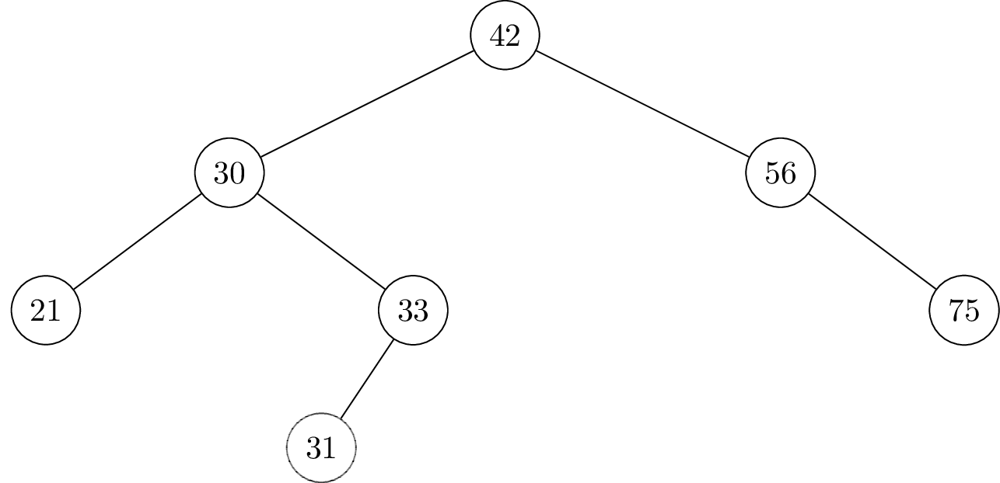
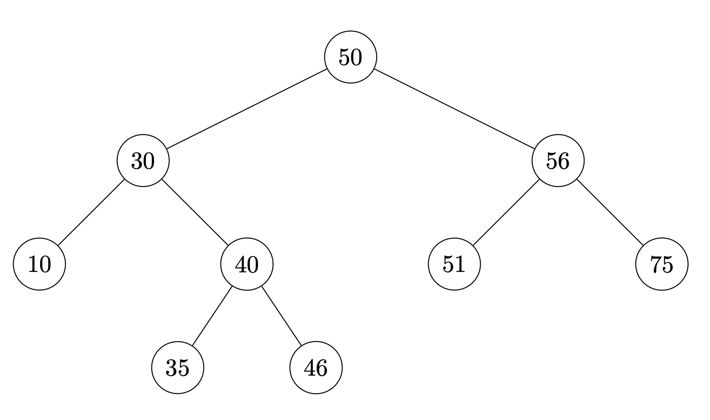
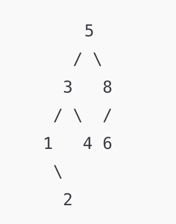

Tags: binary search trees
Define the largest gap in a collection of numbers (also known as its range) to be greatest difference between two elements in the collection (in absolute value). For example, the largest gap in \(\{4, 9, 5, 1, 6\}\) is 8 (between 1 and 9).
Suppose a collection of \(n\) numbers is stored in a balanced binary search tree. What is the time complexity required of an efficient algorithm to calculate the largest gap in the collection? State your answer as a function of \(n\) in asymptotic notation.
\(\Theta(\log n)\). To find the largest gap, we simply need to find the minimum and the maximum in the balanced BST, which both take \(\Theta(\log{n})\) time. Therefore adding them up, the time complexity for calculating the largest gap is \(\Theta(\log{n})\).
Tags: binary search trees
Suppose the numbers 41, 32, and 40 are inserted (in that order) into the below binary search tree. Draw where the new nodes will appear.

41 will be the right child of 33.
32 will be the right child of 31.
40 will be the left child of 41.
Tags: binary search trees
Define the smallest gap in a collection of numbers to be the smallest difference between two distinct elements in the collection (in absolute value). For example, the smallest gap in \(\{4, 9, 1, 6\}\) is 2 (between 4 and 6).
Suppose a collection of \(n\) numbers is stored in a balanced binary search tree. What is the time complexity required for an efficient algorithm to calculate the smallest gap of the numbers in the BST? State your answer as a function of \(n\) in asymptotic notation.
\(\Theta(n)\). The smallest gap in the BST can occur between any two consecutive pairs of numbers in the BST, meaning that no matter what we need to search through the whole tree to obtain this number, taking \(\Theta(n)\) time.
Tags: binary search trees
Suppose the numbers 41, 32, and 33 are inserted (in that order) into the below binary search tree. Draw where the new nodes will appear.

41 will become the left child of 46.
32 will become the left child of 35.
33 will become the right child of 32.
Tags: binary search trees
Define the largest gap in a collection of numbers to be the largest difference between two distinct elements in the collection (in absolute value). For example, the largest gap in \(\{4, 9, 1, 6\}\) is 8 (between 1 and 9).
Suppose a collection of \(n\) numbers is stored in a balanced binary search tree. What is the time complexity required for an efficient algorithm to calculate the largest gap of the numbers in the BST? State your answer as a function of \(n\) in asymptotic notation.
\(\Theta(\log n)\). With the same reasoning as Problem 20, we only require the largest and smallest number in the BST in order to find the largest gap (just subtract the smallest from the largest number), therefore the time complexity of this operation in a balanced BST will be \(\Theta(\log{n})\).
Tags: binary search trees
Suppose a collection of \(n\) numbers is stored in a balanced binary search tree. What is the time complexity required of an efficient algorithm to calculate the mean of the collection? State your answer as a function of \(n\) in asymptotic notation.
\(\Theta(n)\). Without knowing any information on the numbers, the best we can do to compute the mean is to add all numbers in the BST divided by the total number of nodes in the BST. To do this, we will have to traverse the entire BST no matter what (via some traversal algorithm), which takes \(\Theta(n)\) time. (Note that the word \(\textbf{balanced}\) does not help in this question!!!)
Tags: binary search trees
Draw the binary search tree that results from inserting the following nodes into an initially empty tree, in the order given: 5, 3, 1, 8, 4, 2, 6.

Tags: time complexity, binary search trees
Suppose a collection of unique numbers is stored in a balanced binary search tree, and that each node in the tree has been given a .size attribute which contains the number of nodes in the subtree rooted at that node. What is the time complexity required of an efficient algorithm for computing the number of elements in the collection which are larger than some threshold, \(t\)?
\(\Theta(\log{n})\). We can consider the following algorithm: Query for \(t\) in the BST, and define a new variable total for tracking the result. For each step of the recursion, if we go to the left, add the size of the right branch + 1 to the running total. We repeat the above until the query() function finishes running, which will give us exactly the number of elements in the collection which are larger than \(t\). Since we are querying (and adding some constant time updating steps) in a balanced BST, the time complexity for this question will be \(\Theta(\log{n})\).
Tags: time complexity, binary search trees
Suppose a collection of \(n\) numbers is stored in a balanced binary search tree. What is the time complexity required of an efficient algorithm to calculate the mean of the collection? State your answer as a function of \(n\) in asymptotic notation.